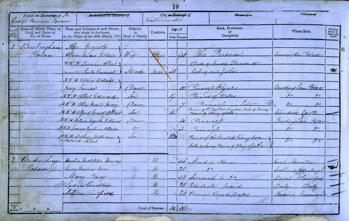

Birth, marriage, and death records
The General Register Office has records for England and Wales from 1 July 1837. These records can connect a person to parents, spouses, places, and occupations.
Family History Beginners' Hub
Family history gives names, places, and stories to the people who came before you. This guide is for beginners with English ancestry from 1837 onwards, when civil registration records began in England and Wales.
Start with what your family already knows, then use certificates and census records to move back one generation at a time.

The General Register Office has records for England and Wales from 1 July 1837. These records can connect a person to parents, spouses, places, and occupations.
Census records from 1841 to 1921 can place a family in a household on a certain night. They are a useful way to check ages, occupations, relationships, and birthplaces.
If your research goes earlier than 1837, parish registers are usually the next place to look for baptisms, marriages, and burials.